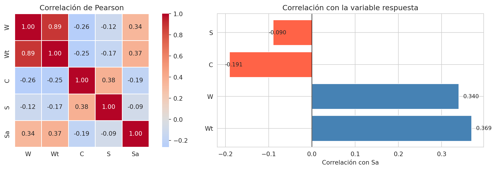
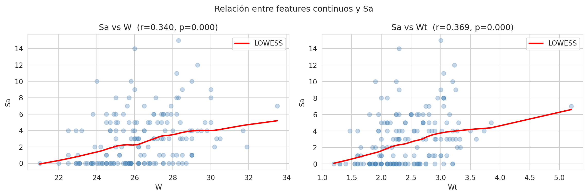
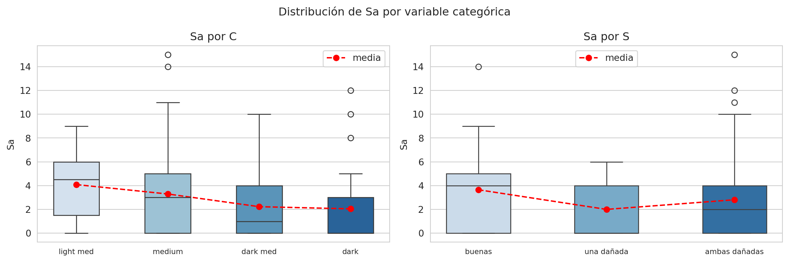

El notebook 01_eda_frecuentista.ipynb sigue el ejemplo de Agresti (2002, cap. 4) usando solo W como predictor. Aquí exploramos los cuatro features disponibles (W, Wt, C, S) y ajustamos modelos frecuentistas completos para evaluar si los features adicionales aportan poder predictivo sobre Sa.
Features: - W: ancho del caparazón (cm) — continua - Wt: peso (kg) — continua, correlacionada con W - C: color (1=light medium, 2=medium, 3=dark medium, 4=dark) — ordinal - S: condición de la espina (1=ambas buenas, 2=una dañada, 3=ambas dañadas) — ordinal - Sa: número de satélites — variable respuesta (conteo)
Code
import pandas as pdimport numpy as npimport statsmodels.formula.api as smfimport matplotlib.pyplot as pltimport seaborn as snsfrom scipy import statssns.set_style('whitegrid')np.random.seed(42)df = pd.read_csv('../data/agresti_crab_satellites_dataset.csv')print(df.shape)display(df.head())
corr = df[['W', 'Wt', 'C', 'S', 'Sa']].corr()fig, axes = plt.subplots(1, 2, figsize=(13, 4))# Heatmapsns.heatmap(corr, annot=True, fmt='.2f', cmap='coolwarm', center=0, ax=axes[0], square=True, linewidths=0.5)axes[0].set_title('Correlación de Pearson')# Correlaciones con Sa ordenadascorr_sa = corr['Sa'].drop('Sa').sort_values(key=abs, ascending=False)colors = ['steelblue'if v >0else'tomato'for v in corr_sa]axes[1].barh(corr_sa.index, corr_sa.values, color=colors)axes[1].axvline(0, color='black', lw=0.8)axes[1].set_xlabel('Correlación con Sa')axes[1].set_title('Correlación con la variable respuesta')for i, v inenumerate(corr_sa.values): axes[1].text(v +0.01* np.sign(v), i, f'{v:.3f}', va='center', fontsize=9)plt.tight_layout()plt.show()

3. Relación de cada feature con Sa
Code
fig, axes = plt.subplots(1, 2, figsize=(12, 4))for ax, col inzip(axes, ['W', 'Wt']): ax.scatter(df[col], df['Sa'], alpha=0.3, color='steelblue')# LOWESSfrom statsmodels.nonparametric.smoothers_lowess import lowess smooth = lowess(df['Sa'], df[col], frac=0.5) ax.plot(smooth[:, 0], smooth[:, 1], color='red', lw=2, label='LOWESS') r, p = stats.pearsonr(df[col], df['Sa']) ax.set_title(f'Sa vs {col} (r={r:.3f}, p={p:.3f})') ax.set_xlabel(col) ax.set_ylabel('Sa') ax.legend()plt.suptitle('Relación entre features continuos y Sa', fontsize=12)plt.tight_layout()plt.show()

Code
fig, axes = plt.subplots(1, 2, figsize=(12, 4))c_labels = {1: 'light med', 2: 'medium', 3: 'dark med', 4: 'dark'}s_labels = {1: 'buenas', 2: 'una dañada', 3: 'ambas dañadas'}for ax, (col, labels) inzip(axes, [('C', c_labels), ('S', s_labels)]): order =sorted(df[col].unique()) sns.boxplot(x=col, y='Sa', data=df, order=order, ax=ax, palette='Blues', width=0.5)# Medias por grupo means = df.groupby(col)['Sa'].mean() ax.plot(range(len(order)), [means[k] for k in order],'ro--', ms=6, label='media') ax.set_xticklabels([labels[k] for k in order], fontsize=8) ax.set_title(f'Sa por {col}') ax.set_xlabel('') ax.legend()plt.suptitle('Distribución de Sa por variable categórica', fontsize=12)plt.tight_layout()plt.show()
/tmp/ipykernel_169643/1799365727.py:8: FutureWarning:
Passing `palette` without assigning `hue` is deprecated and will be removed in v0.14.0. Assign the `x` variable to `hue` and set `legend=False` for the same effect.
sns.boxplot(x=col, y='Sa', data=df, order=order, ax=ax,
/tmp/ipykernel_169643/1799365727.py:14: UserWarning: set_ticklabels() should only be used with a fixed number of ticks, i.e. after set_ticks() or using a FixedLocator.
ax.set_xticklabels([labels[k] for k in order], fontsize=8)
/tmp/ipykernel_169643/1799365727.py:8: FutureWarning:
Passing `palette` without assigning `hue` is deprecated and will be removed in v0.14.0. Assign the `x` variable to `hue` and set `legend=False` for the same effect.
sns.boxplot(x=col, y='Sa', data=df, order=order, ax=ax,
/tmp/ipykernel_169643/1799365727.py:14: UserWarning: set_ticklabels() should only be used with a fixed number of ticks, i.e. after set_ticks() or using a FixedLocator.
ax.set_xticklabels([labels[k] for k in order], fontsize=8)

Code
for col, name in [('C', 'Color'), ('S', 'Spine condition')]: summary = df.groupby(col)['Sa'].agg( n='count', mean='mean', var='var', prop_zeros=lambda x: (x ==0).mean() ).round(3) summary['disp_index'] = (summary['var'] / summary['mean']).round(3)print(f'\n=== Sa por {name} ===') display(summary)
=== Sa por Color ===
n
mean
var
prop_zeros
disp_index
C
1
12
4.083
9.720
0.250
2.381
2
95
3.295
10.274
0.274
3.118
3
44
2.227
6.738
0.409
3.026
4
22
2.045
13.093
0.682
6.402
=== Sa por Spine condition ===
n
mean
var
prop_zeros
disp_index
S
1
37
3.649
11.512
0.297
3.155
2
15
2.000
5.571
0.533
2.786
3
121
2.810
9.822
0.355
3.495
4. Modelos frecuentistas con todos los features
C y S se tratan como continuas ordinales — un solo coeficiente por variable. Si hubiera efectos no lineales habría que usar C(C) para dummy encoding.
W y Wt están altamente correlacionadas — ajustamos modelos con y sin Wt para evaluar la multicolinealidad.
Code
for col in ['W', 'Wt', 'C', 'S']: df[f'{col}_sc'] = (df[col] - df[col].mean()) / df[col].std()print('Correlación W_sc vs Wt_sc:', df['W_sc'].corr(df['Wt_sc']).round(3))
Correlación W_sc vs Wt_sc: 0.887
Code
poisson_specs = {'P1 — W': 'Sa ~ W_sc','P2 — W + Wt': 'Sa ~ W_sc + Wt_sc','P3 — W + C + S': 'Sa ~ W_sc + C_sc + S_sc','P4 — todos': 'Sa ~ W_sc + Wt_sc + C_sc + S_sc',}poisson_results = {}print(f"{'Modelo':<20}{'AIC':>8}{'BIC':>8}{'LogLik':>10}")print('-'*50)for name, formula in poisson_specs.items(): r = smf.poisson(formula=formula, data=df).fit(disp=0) poisson_results[name] = rprint(f'{name:<20}{r.aic:>8.1f}{r.bic:>8.1f}{r.llf:>10.1f}')
Modelo AIC BIC LogLik
--------------------------------------------------
P1 — W 927.2 933.5 -461.6
P2 — W + Wt 921.2 930.6 -457.6
P3 — W + C + S 923.5 936.1 -457.7
P4 — todos 917.1 932.9 -453.6
Code
nb_specs = {'NB1 — W': 'Sa ~ W_sc','NB2 — W + Wt': 'Sa ~ W_sc + Wt_sc','NB3 — W + C + S': 'Sa ~ W_sc + C_sc + S_sc','NB4 — todos': 'Sa ~ W_sc + Wt_sc + C_sc + S_sc',}nb_results = {}print(f"{'Modelo':<22}{'AIC':>8}{'BIC':>8}{'LogLik':>10}{'alpha':>8}")print('-'*60)for name, formula in nb_specs.items(): r = smf.negativebinomial(formula=formula, data=df).fit(disp=0) nb_results[name] = rprint(f'{name:<22}{r.aic:>8.1f}{r.bic:>8.1f}{r.llf:>10.1f}{r.params["alpha"]:>8.3f}')
Modelo AIC BIC LogLik alpha
------------------------------------------------------------
NB1 — W 757.3 766.8 -375.6 1.106
NB2 — W + Wt 756.6 769.2 -374.3 1.073
NB3 — W + C + S 758.9 774.7 -374.5 1.076
NB4 — todos 758.4 777.3 -373.2 1.045
W y Wt tienen relación directa (positiva) con Sa y están altamente correlacionadas entre sí. Incluir ambas en el mismo modelo introduce multicolinealidad sin ganancia real.
— Wt no aporta información más allá de la que ya captura W.
C y S tienen relación inversa (negativa) con Sa: hembras de color más oscuro y con peor condición de espina tienden a tener menos satélites. Las correlaciones son más débiles que las de W/Wt.
Comparabilidad entre familias (Poisson vs NegBin)
AIC y BIC sí son comparables entre Poisson y NegBin — ambos se derivan del mismo LogLik sobre los mismos datos, y el parámetro extra de NegBin (alpha) ya está contabilizado en la penalización. Todos los modelos NegBin superan a sus equivalentes Poisson en AIC, BIC y LogLik, confirmando la sobredispersión identificada en el EDA base.
Selección entre modelos NegBin
Las diferencias de AIC entre modelos NegBin son pequeñas — cualquiera podría considerarse razonable. El BIC, que penaliza la complejidad más fuertemente (log(n)·k vs 2·k de AIC, con n=173), muestra diferencias más claras:
Mejor modelo por BIC: NB1 (solo W) — los features adicionales no compensan el costo de complejidad.
Entre los modelos con features extra: NB3 (W + C + S) supera a NB4 (todos), confirmando que Wt es redundante dado W y añade ruido por multicolinealidad.
Conclusión práctica: para este dataset y siguiendo parsimonia, el modelo con solo W es suficiente — consistente con la elección de Agresti (2002).”
¿Qué sigue?
El análisis frecuentista confirma que W (ancho de caparazón) es el predictor más relevante y que el modelo parsimonioso (Sa ~ W, NegBin) es preferible por BIC. Sin embargo, los modelos ajustados por MLE producen estimaciones puntuales: no cuantifican incertidumbre paramétrica ni permiten incorporar conocimiento previo.
En el notebook 03 transitamos al paradigma bayesiano. Comenzamos desde el método más elemental (estimación por grid) y escalamos progresivamente hasta Stan — para que la herramienta no oculte la idea.